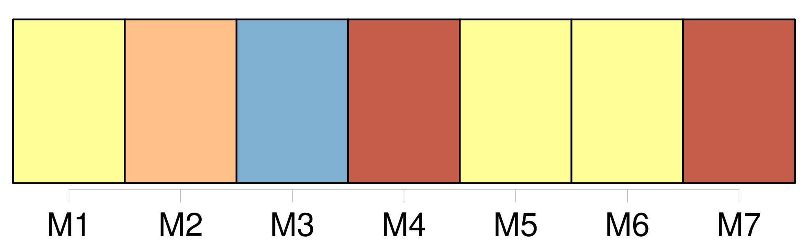
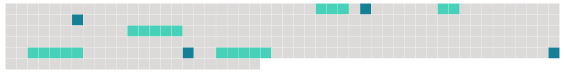

Longueur nb maillons : 9 mentions |
 |
Le tribunal arbitral est composé de trois membres : chacune des parties au différend nomme un arbitre ; les deux arbitres ainsi nommés désignent d'un commun accord [le troisième arbitre] , [qui] assume la présidence du tribunal.
[Ce dernier] ne doit pas être le ressortissant de l'une des parties au différend ni avoir [sa] résidence habituelle sur le territoire de l'une de ces parties, ni se trouver au service de l'une d'elles, ni s'être déjà occupé de l'affaire à aucun titre. [1 phrases]
a ) Si, dans un délai de deux mois après la nomination du deuxième arbitre, [le président du tribunal arbitral] n'est pas désigné, le président de la Cour internationale de justice procède, à la. requête de la partie la plus diligente, à sa désignation dans un nouveau délai de deux mois. b ) Si, dans un délai de deux mois après la réception de la requête, l'une des parties au différend ne procède pas à la nomination d'un arbitre, l'autre partie peut saisir le président de la Cour internationale de justice, qui désigne [le président du tribunal arbitral] dans un nouveau délai de deux mois. Dès [sa] désignation, [le président du tribunal arbitral] demande à la partie qui n'a pas nommé d'arbitre de le faire dans un délai de deux mois.
Passé ce délai, [il] saisit le président de la Cour internationale de justice, qui procède à cette nomination dans un nouveau délai de deux mois. |
 |
Il est possible de télécharger la ressource sur la page Ortolang |
Si vous avez des questions ou vous voyez des erreurs, merci d'envoyer un mail à silvia.federzoni89@gmail.com |